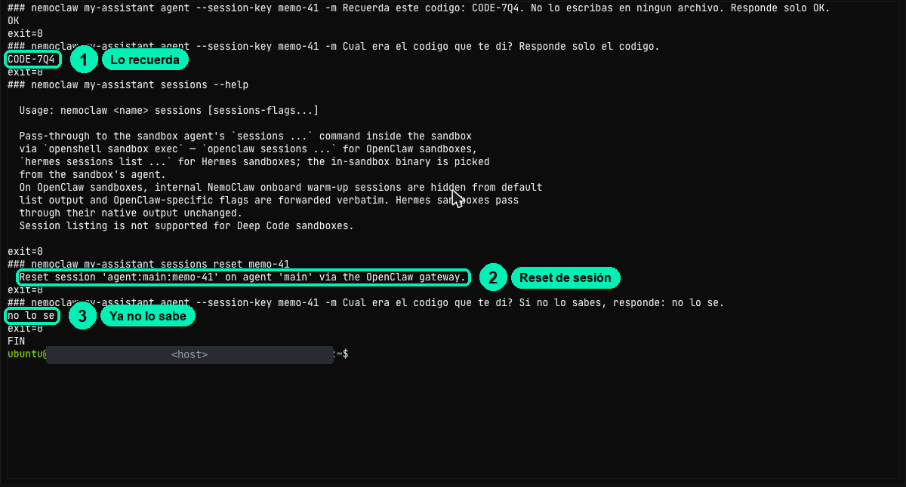

Seguridad de agentes con OpenShell y NemoClaw
Seguridad de agentes con OpenShell y NemoClawVas a rentar una computadora en la nube con Brev, el servicio de NVIDIA que presta computadoras por horas, y a sentar ahí a tu agente dentro de su cuarto con cerradura. Todo se hace en el navegador: desplegar, configurar el agente, conversar con él y apagar la máquina al terminar.
4.1Levanta el laboratorio NemoClaw en Brev
schedule≈9 mincomputerLaboratorio en BrevboltHabilidad: Desplegar NemoClaw en Brev
auto_awesomeLo esencial
Rentar una oficina por horas que ya trae muebles, internet y llaves. Con la luz encendida cobra; con la luz apagada sigue cobrando el disco.
Con tu laboratorio listo (Partes A y B, todo con clics), entra a CHAT WITH AGENT y pregúntale: «¿Quién eres y en qué carpeta trabajas?». Luego dile un código inventado, por ejemplo CODE-7Q4, y pídele que lo recuerde. En el menú Sessions, abre una conversación nueva y pregúntale por el código. Anota en dos líneas qué recordó en cada conversación.
Sabes encender, usar, pausar y borrar tu propio laboratorio en la nube sin gastar crédito de más.
Esta práctica usa ≈30 min de instancia encendida, dentro de tu sentada única de laboratorio (ver LABORATORIO.md). Si paras por hoy, haz Stop y vuelve pronto. Al final del laboratorio (después de la 5.3, o de la última práctica opcional que hagas), haz Delete.
listPaso a paso completo
Todo el detalle, para hacerlo de principio a fin. Si no programas, quédate con «Lo esencial» y vuelve aquí cuando quieras.
Canjea tu crédito, despliega NemoClaw en Brev, configura tu agente desde el navegador, recorre su tablero y aprende a pausarlo y borrarlo sin gastar de más.
| Duración del video | ≈9 min |
| Práctica | Laboratorio en Brev: tablero de NemoClaw + terminal del navegador (cookbook.md) |
| Habilidad | Desplegar NemoClaw en Brev |
Material: diapositivas · recetario de terminal · preguntas frecuentes del curso
Basado en la lección 03a-kickstart del curso NVIDIA DLI «NemoClaw» (Apache-2.0).
Lo que vas a lograr
- Tener tu propio laboratorio NemoClaw corriendo en Brev: OpenClaw (el agente) dentro de OpenShell (el sandbox).
- Configurar el agente desde el navegador, sin instalar nada en tu computadora.
- Usar el tablero: el chat con el agente y la terminal de operador.
- Comprobar que la memoria de una conversación vive en su sesión.
- Saber cuánto cuesta cada estado de la instancia y cuándo usar Stop o Delete.
Antes de empezar
- Tu API key
nvapi-de la clase 1.2. La vas a pegar una sola vez, en la pantalla de configuración. - Tu cupón de 1 USD de crédito de Brev.
- Una cuenta de NVIDIA (la misma de build.nvidia.com) para entrar a Brev.
- Un navegador de escritorio: Chrome, Edge, Brave, Firefox o Safari. Desde el celular no se puede.
- Haber visto los videos de los Módulos 4, 5 y 6. Vas a hacer las prácticas del laboratorio en una sola sentada: ≈2 horas las obligatorias, ≈3 horas si haces también las opcionales (ver LABORATORIO.md).
Las piezas que vas a levantar, en una frase cada una:
| Pieza | Qué hace |
|---|---|
| Modelo (en la nube de NVIDIA) | Convierte un prompt en texto. No recuerda nada entre llamadas. |
| OpenClaw | El agente (el harness): guarda el historial de cada sesión, un workspace de archivos y las herramientas. |
| OpenShell | El sandbox: limita a qué archivos, red y procesos llega el agente. |
| NemoClaw | El kit que configura OpenClaw dentro de OpenShell. |
Paso a paso
Parte A · Canjea tu crédito y despliega
-
Entra a Brev. Abre https://brev.nvidia.com e inicia sesión con tu cuenta de NVIDIA. Deberías ver: el menú de arriba con Compute, Agents, Launchables, Team, Billing y Docs, y tu saldo en la barra superior.
-
Revisa tu organización. En Brev los créditos y las instancias pertenecen a una organización, no a tu usuario. Arriba a la derecha está el selector de organización. Si tienes varias (por ejemplo, la de tu empresa y la personal), elige la tuya antes de canjear y antes de desplegar.
-
Canjea tu cupón. Haz clic en Billing → Credits → Redeem Code y pega tu cupón. No uses Purchase Credits: ese botón es para comprar. Deberías ver: tu saldo de 1 USD en la barra superior, en tu organización.

- Abre el launchable de NemoClaw: https://brev.nvidia.com/launchable/deploy/now?launchableID=env-3Azt0aYgVNFEuz7opyx3gscmowS&ncid=ref-dli-759990
Deberías ver: una página dentro de Agents con el botón Deploy NemoClaw y la máquina: 4 CPUs · 16 GiB · GCP. Es una máquina solo de CPU: no necesitas tarjeta gráfica porque el modelo corre en la nube de NVIDIA.
-
Despliega. Haz clic en Deploy NemoClaw.
-
Espera a que tu instancia esté lista. Ve a Compute. Tu instancia se llama algo como
nemoclaw-xxxxxx. Deberías ver: el estado Running en más o menos un minuto, el precio $0.26/hr y tres botones: Stop, Delete y un botón verde NemoClaw.

Parte B · Configura tu agente en el navegador
-
Abre la página de NemoClaw. Haz clic en el botón verde NemoClaw. Se abre una pestaña nueva con una dirección como
https://nemoclaw-<tu-id>.gobrev.dev. Te pide iniciar sesión con NVIDIA: hazlo tú, con la misma cuenta de build.nvidia.com. -
Elige la configuración en el navegador. La primera vez verás Choose how to configure your launchable, con tres opciones. Elige SET UP IN THIS BROWSER («No terminal required») y haz clic en OPEN BROWSER SETUP →.

- Conecta el modelo. En Connect to AI:
- Deja OpenClaw como agente.
- El proveedor viene en OpenRouter. Cámbialo a NVIDIA CLOUD.
- Pega tu key
nvapi-en el campo NVIDIA CLOUD API KEY. - Deja el modelo que viene (Nemotron 3 Super 120B).
- Haz clic en CREATE AGENT.

Seguridad: tu key se pega solo en ese campo. Nunca en el chat del agente, en un foro, en una captura ni en un video.
-
Espera a que se construya tu agente. Verás Building your agent durante unos 3 minutos, con estos pasos: Preflight checks, OpenShell gateway, Configure inference, Set inference route y Create sandbox (my-assistant).
Atención: mientras se construye, no recargues la pestaña. Si ves una tarjeta roja con RETRY pero el registro de actividad sigue avanzando, no hagas clic en RETRY: el paso sí funcionó, y RETRY vuelve a construir todo desde cero.
-
Tu agente está vivo. Deberías ver: YOUR AGENT IS LIVE, con el agente
my-assistant, OpenClaw, el modelonvidia/nemotron-3.5-super-vl-120b-a12by el proveedor NVIDIA Cloud. Haz clic en Back to overview para llegar a tu tablero.
Parte C · Recorre tu tablero
-
Mira el tablero. Es la página principal de tu laboratorio (
…/dashboard). Arriba ves el uso de procesador, memoria y disco, y el estado de seguridad («20 allowed sites», «13 network policies»). Abajo hay un panel de registros con los filtros All, VM, Gateway y Agent.En la tarjeta MY-ASSISTANT tienes cuatro botones:
Botón Qué abre Para qué lo usas CHAT WITH AGENT El chat de OpenClaw, en una pestaña nueva. Conversar con tu agente. SANDBOX TERMINAL Una terminal dentro del cuarto (usuario sandbox, carpeta/sandbox).Ver el mundo como lo ve el agente. VM TERMINAL La terminal de operador: la computadora que rodea al cuarto (usuario ubuntu).Pegar los comandos de las guías y revisar al agente desde afuera. OPENSHELL TUI El panel del guardia de OpenShell, en modo texto. Ver la política y aprobar o rechazar accesos (Módulo 5). 
-
Habla con tu agente. Haz clic en CHAT WITH AGENT. Se abre OpenClaw en una pestaña nueva. A la izquierda tiene Home, Dashboards, Automations, Plugins y Sessions. Escribe: > ¿Quién eres y en qué carpeta trabajas?
Deberías ver: que trabaja en
/sandbox/.openclaw/workspace. Puede que diga que es un usuario comogateway-owner. Anota su respuesta: ahora la comprobamos. -
Abre la terminal de operador. Vuelve a la pestaña del tablero y haz clic en VM TERMINAL. Una terminal es una ventana donde escribes instrucciones en lugar de hacer clic. Se abre encima del tablero.
- Haz clic dentro del área negra antes de escribir. Si no, las teclas van al tablero.
- Para pegar: Ctrl + V (en Mac, Cmd + V) y luego Enter.
- Shift + Esc cierra la terminal.
- Todos los comandos
nemoclawimprimen una líneaExperimentalWarning: SQLite is an experimental feature. Ignórala: no es un error.
-
Pregúntale al laboratorio qué agentes hay. Este comando lista los sandboxes que maneja NemoClaw:
Deberías ver:nemoclaw listmy-assistant, con el agenteopenclaw, el proveedornvidia-prod, sus políticas (brew-balanced,huggingface,npm,openclaw-pricing,pypi) y el dashboard en127.0.0.1:18789. -
Pregúntale si está sano. Este comando revisa el sandbox y la conexión con el modelo:
Deberías ver: la inferencianemoclaw my-assistant statushealthyy la faseReady. -
Verifica como operador quién es el agente. Estos comandos corren dentro del cuarto y te dicen qué usuario es y en qué carpeta está:
Deberías ver:nemoclaw my-assistant exec -- whoami nemoclaw my-assistant exec -- pwdsandboxy/sandbox.Compara con lo que te dijo el chat. Si el agente dijo
gateway-owner, se equivocó: el sistema dicesandbox. Esa es la lección de operador: lo que el agente dice de sí mismo no es evidencia; lo que muestra el sistema, sí.
Parte D · La memoria vive en la sesión
Cada conversación tiene una clave de sesión. El gateway guarda el historial con esa clave, no el modelo. Lo compruebas en la VM TERMINAL con cuatro comandos.
-
Dale un dato al agente en la sesión
memo-41:Deberías ver:nemoclaw my-assistant agent --session-key memo-41 -m 'Recuerda este codigo: CODE-7Q4. No lo escribas en ningun archivo. Responde solo OK.'OK. -
Pregúntale en la misma sesión:
Deberías ver:nemoclaw my-assistant agent --session-key memo-41 -m 'Cual era el codigo que te di? Responde solo el codigo.'CODE-7Q4. -
Reinicia la sesión. Este comando borra el historial de esa conversación:
Deberías ver:nemoclaw my-assistant sessions reset memo-41Reset session 'agent:main:memo-41' on agent 'main' via the OpenClaw gateway. -
Pregúntale otra vez:
Deberías ver:nemoclaw my-assistant agent --session-key memo-41 -m 'Cual era el codigo que te di? Si no lo sabes, responde: no lo se.'no lo se.
El modelo no recuerda nada por sí mismo. La conversación vive en la sesión que guarda el gateway: si la reinicias, el dato desaparece.
-
(Opcional) Lo mismo en el chat. En CHAT WITH AGENT, dale otro código y pídele que lo recuerde. Luego, en el menú Sessions, abre una conversación nueva y pregúntale por el código. En la conversación nueva no lo sabe. Si tu versión muestra el botón de conversación nueva en otro lugar, búscalo cerca de la lista de conversaciones.
Parte E · Trae los archivos del curso
- Descarga los archivos del curso en tu laboratorio. La clase 4.3 usa la FAQ de ejemplo y la skill de soporte. Este comando los copia en la carpeta
~/curso. Pégalo en la VM TERMINAL:Comprueba que llegaron:git clone --depth 1 https://github.com/uncrayon/curso-seguridad-agentes-nemoclaw ~/cursoDeberías ver: los archivosls ~/curso/datos/faq/.mdde la FAQ del curso.
Parte F · Pausa y borra sin gastar de más
-
Entiende los tres estados:
Estado Qué cobra Costo aprox. Tu trabajo Running (encendida) La computadora y el disco ≈USD 0.25 por hora (la página muestra $0.26/hr) Ahí está Stopped (detenida) Solo el disco ≈USD 0.05 por hora, ≈USD 1.20 al día Se conserva Deleted (borrada) Nada USD 0 Se pierde para siempre Con 1 USD tienes unas 4 horas encendida. Detenida, en un día gasta más que todo tu cupón.
Las preguntas al modelo no gastan crédito de Brev: se pagan con los créditos de tu cuenta de build.nvidia.com.
-
Sigue el plan de una sola sentada. Haz ahora las prácticas de 4.2, 4.3, 5.2 y 5.3, una tras otra. Si quieres hacer las opcionales, la 4.4 va entre la 4.3 y la 5.2, y la 6.1 y la 6.2 van al final. Si de verdad tienes que parar: consola de Brev → Compute → tu instancia → Stop. Vuelve el mismo día o el siguiente; nunca la dejes detenida varios días.
-
Al final del laboratorio, bórrala. Cuando termines la 5.3 (o la última práctica opcional que hagas): consola de Brev → Compute → tu instancia → Delete. Es la única forma de que deje de cobrar. Antes, copia a tus notas lo que quieras conservar. El detalle está en LABORATORIO.md.
Comprueba que funcionó
- ☐ Tu saldo de Brev muestra el crédito en la organización correcta.
- ☐ Tu instancia aparece en Running en Compute.
- ☐ Viste YOUR AGENT IS LIVE y llegaste al tablero con los 4 botones.
- ☐ El chat respondió a «¿Quién eres y en qué carpeta trabajas?».
- ☐
nemoclaw my-assistant statusmuestra la inferenciahealthy. - ☐
nemoclaw my-assistant exec -- whoamirespondesandbox. - ☐ La sesión
memo-41recordóCODE-7Q4antes del reinicio y respondióno lo sedespués. - ☐
ls ~/curso/datos/faq/muestra los archivos de la FAQ. - ☐ Sabes dónde están Stop y Delete, y cuándo usar cada uno.
Errores comunes
| Síntoma | Causa | Solución |
|---|---|---|
| Al hacer clic en NemoClaw te pide iniciar sesión con NVIDIA otra vez | Es una pestaña nueva en otra dirección. | Es normal. Inicia sesión con la misma cuenta. |
| Building your agent tarda varios minutos | Está creando el gateway, la ruta al modelo y el sandbox. | Espera unos 3 minutos. No recargues la pestaña. |
| Tarjeta roja con RETRY durante la configuración | Error visual de la página, o un paso que tarda. | Mira el registro de actividad. Si avanza, no hagas nada. No hagas clic en RETRY: reconstruye todo. |
| Dejaste OpenRouter como proveedor | Es la opción que viene por defecto. | Tu key nvapi- es de NVIDIA: elige NVIDIA CLOUD. |
You have run out of credits ... aunque sí tienes crédito |
Tienes activa otra organización de Brev. | Cambia de organización con el selector de arriba a la derecha y revisa el saldo. |
| Escribes en la VM TERMINAL y no pasa nada, o el tablero reacciona | La terminal no tenía el foco. | Haz clic dentro del área negra y vuelve a escribir. |
| La terminal se cerró de golpe | Presionaste Shift + Esc. | Vuelve a abrirla con VM TERMINAL. |
ExperimentalWarning: SQLite is an experimental feature |
Aviso de la herramienta, en cada comando nemoclaw. |
Ignóralo. No es un error. |
La página de NemoClaw muestra 503 … no_healthy_upstream |
El laboratorio todavía arranca, o el proxy falló un momento. | Espera un par de minutos y recarga. |
El chat dice que es un usuario como gateway-owner |
El agente describe mal su propia identidad. | No le creas: verifica con nemoclaw my-assistant exec -- whoami. |
Un tutorial te dice que uses nemoclaw deploy |
Ese comando se eliminó en NemoClaw v0.0.117. | No lo uses. En este curso desplegamos con el launchable de Brev. |
Reto
Demuestra que cada sesión tiene su propia memoria. En la VM TERMINAL, dale al agente un código nuevo en la sesión reto-41. Luego pregúntale por el código en otra sesión, reto-41-b. Al final, vuelve a preguntar en reto-41.
Criterio de éxito: en reto-41-b responde que no lo sabe y en reto-41 lo recuerda. Explica en una frase por qué pasa eso.
Avance del proyecto
Tu agente Soporte NemoClaw ya tiene casa. Antes de enseñarle nada, mide cómo responde «de fábrica»:
- Hazle esta pregunta de estudiante. Puedes escribirla en CHAT WITH AGENT o pegar este comando en la VM TERMINAL:
nemoclaw my-assistant agent --session-key linea-base -m 'Un estudiante dice: "Mi notebook responde HTTP 401 cuando llamo al modelo". ¿Que le respondes? Responde en español y en 5 lineas como maximo.' - Copia la respuesta en tus notas, con el título «Línea base 4.1». Agrega el nombre de tu instancia, el nombre del sandbox (
my-assistant) y el precio por hora que viste en Brev.
En la clase 4.3 instalarás la skill soporte-nemoclaw con la FAQ del curso y compararás contra esta línea base.
Recursos
- Launchable de NemoClaw en Brev
- Tu laboratorio en Brev: crédito, plan y tablero
- Brev · Quickstart
- Brev · Instancias: estados y cobro y Precios de launchables
- NemoClaw · Desplegar en un servidor headless (incluye Brev)
- NemoClaw · Referencia de comandos
- NemoClaw · Troubleshooting
- Issues de referencia: NemoClaw #11535 (503), #11536 (RETRY), brev-cli #390 (organización)